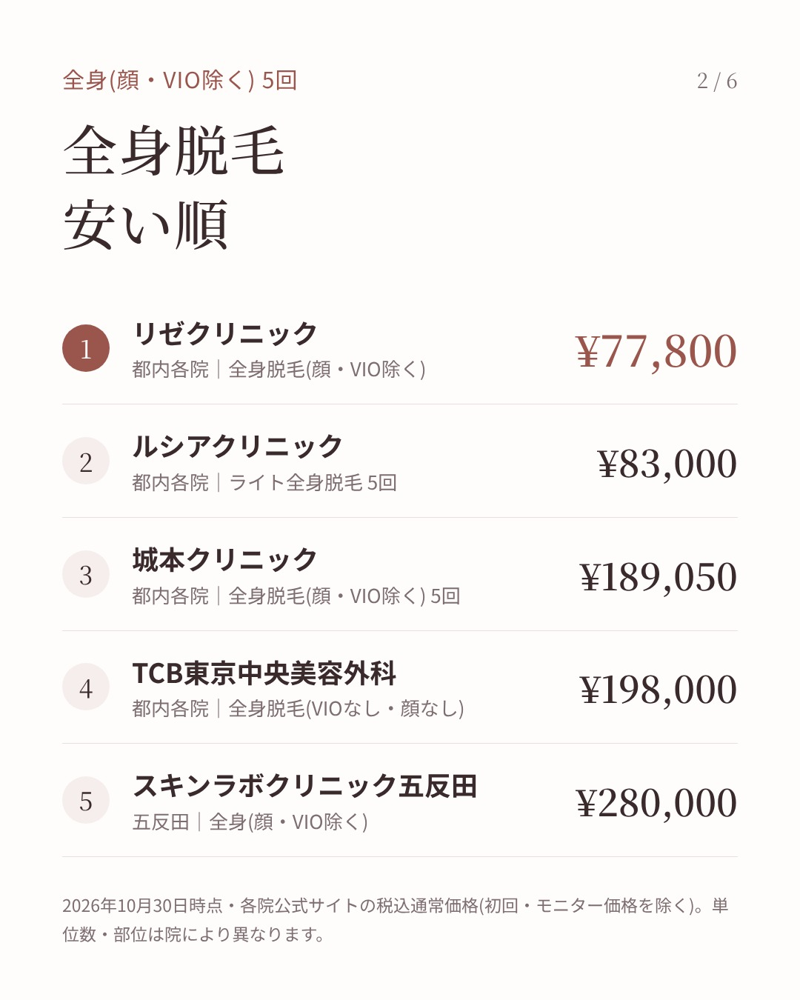
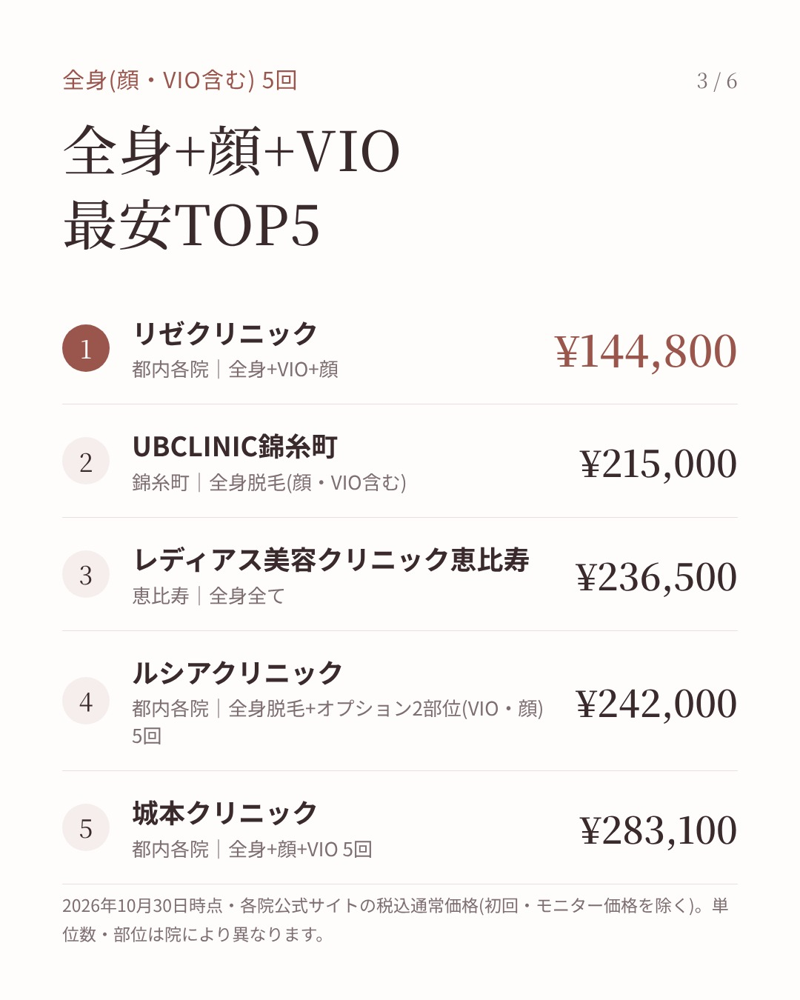
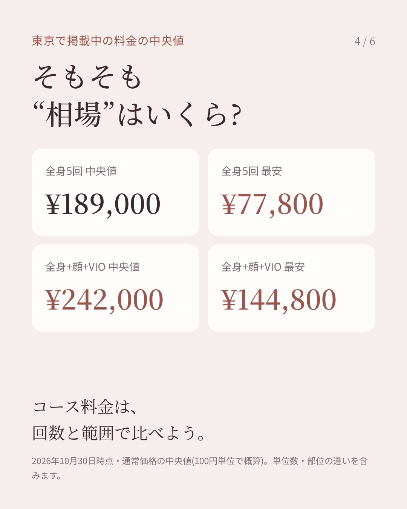
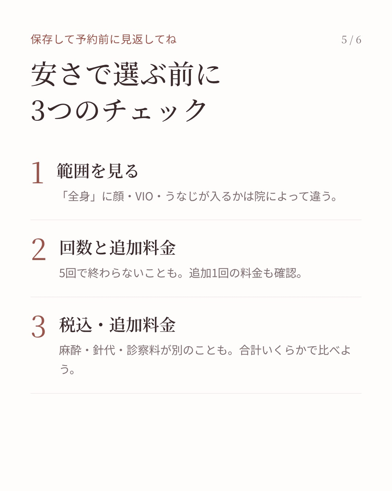
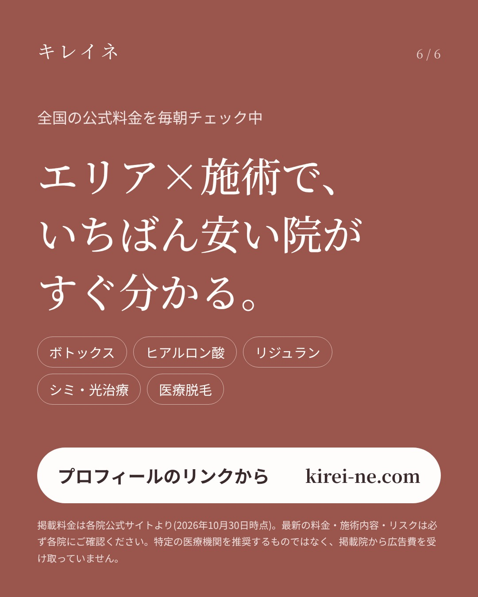

画像を長押し →「写真に保存」(01から順に)
リゼの全身脱毛5回(顔・VIO除く)、10月28日のチェックで64,800円→77,800円に変わってました。 それでも東京で並べるとまだいちばん安い。 ただ真ん中は189,000円くらいなので、ここだけ見て決めるのはちょっと早いかも。 脱毛は「全身」に顔やVIOが入るか、5回で終わるか、追加1回いくらかで合計がかなり変わります。 安い順と相場、予約前に見るところをカードに入れておいたので、比べるときに使ってね🙌 みんなは顔・VIO込みで考えてる？ #医療脱毛 #全身脱毛 #美容皮膚科 #美容医療 #東京美容 ※10月30日時点・各院公式サイトの税込通常価格。最新は各院へ。